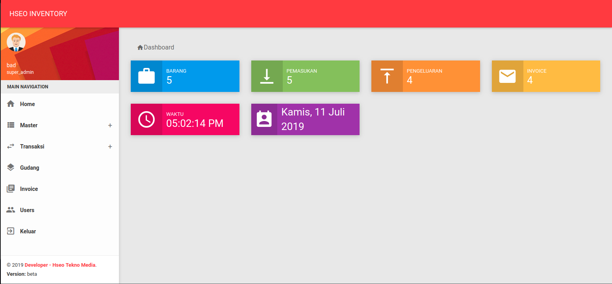
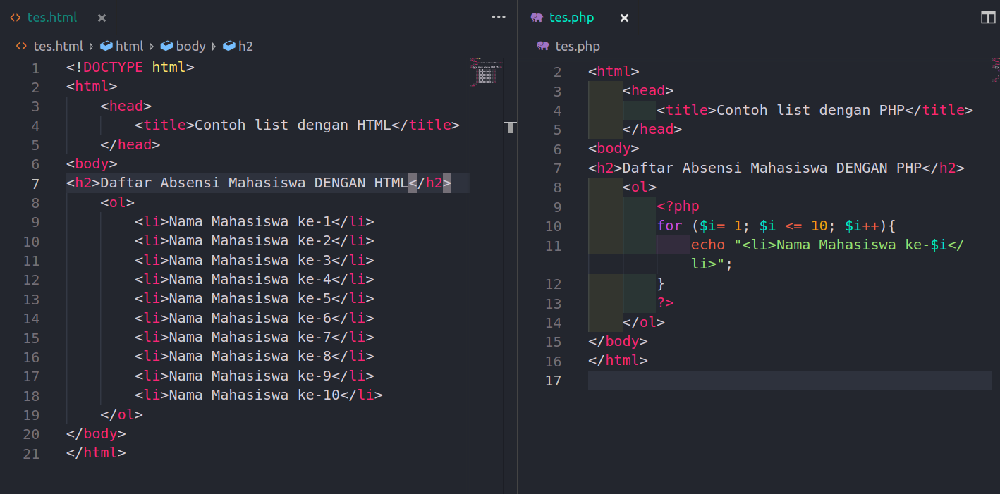
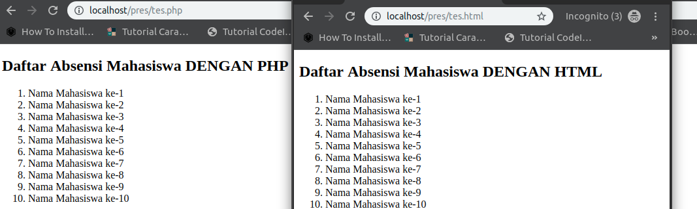
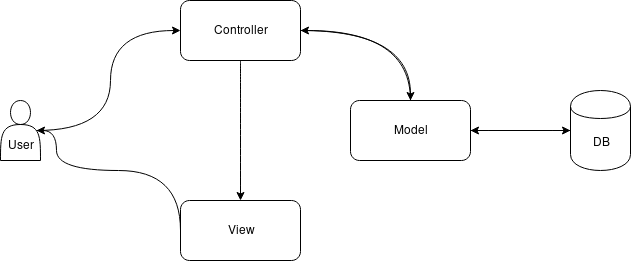

INVENTORY in HSEO
INVENTORY ?
WEB APLIKASI INVENTORY
Inventory
Inventory adalah persediaan dalam bahasa Indonesia. Persediaan, kaitannya dengan aktivitas logistik sebuah perusahaan, merupakan suatu kegiatan yang menyediakan stok bahan baku atau barang setengah jadi ataupun barang jadi demi kelancaran proses produksi dan/atau pemenuhan permintaan pelanggan.
Merupakan sebuah kegiatan menyediakan stok barang kurang lebih dalam jangka waktu 1 bulan kedepan.
TUJUAN INVENTORY ?
-
Supaya pada saat kita membutuhkan barang-barang ini selalu tersedia di kantor.
-
Mengelola kebutuhan barang
MANFAAT INVENTORY ?
-
Stock Control
-
Peningkatan Efisiensi
PHP ?
PENGERTIAN PHP
PHP adalah bahasa scripting tujuan umum populer yang sangat cocok untuk pengembangan web. Cepat, fleksibel, dan pragmatis, PHP memberdayakan semuanya, mulai dari blog Anda hingga situs web paling populer di dunia. (PHP.NET)
PHP adalah bahasa pemrograman script server-side yang didesain untuk pengembangan web. Selain itu, PHP juga bisa digunakan sebagai bahasa pemrograman umum (wikipedia).
PHP
Personal Home pageHypertext Preprocessor
Open Source
APA YANG BISA KITA LAKUKAN DENGAN PHP
-
PHP dapat menghasilkan halaman yg dinamis
-
PHP dapat melakukan CRUD, dan menutup files pada server
-
PHP dapat menambah, menghapus memodifikasi data dalam database
-
PHP dapat mengenkripsi data
-
php dapat digunakan untuk mengontrol akses pengguna
FUNGSI PADA PHP
FUNGSI PADA PHP
CODEIGNITER ?
FRAMEWORK
Framework adalah kumpulan intruksi-intruksi yang di kumpulkan dalam class dan function-function dengan fungsi masing-masing untuk memudahkan developer dalam pemanggilannya tanpa harus menuliskan syntax program yang sama berulang-ulang. hal ini memiliki kegunaan untuk menghemat waktu dan mencegah penulisan syntax secara berulang-ulang agar tercipta nya source code yang bersih dan terstruktur.
PENGERTIAN CODEIGNITER
Codeigniter adalah sebuah framework php yang bersifat open source dan menggunakan metode MVC (Model, View, Controller). codeigniter bersifat free alias tidak berbayar jika anda menggunakannya. framework codeigniter di buat dengan tujuan sama seperti framework lainnya yaitu untuk memudahkan developer atau programmer dalam membangun sebuah aplikasi berbasis web tanpa harus membuat nya dari awal.
KONSEP MVC
-
Model, merupakan bagian penanganan yang berhubungan dengan pengolahan atau manipulasi database.
-
View, merupakan bagian yang menangani halaman user interface atau halaman yang muncul pada user.
-
Controller, merupakan kumpulan intruksi aksi yang menghubungkan model dan view.
KONSEP MVC
KENAPA CODEIGNITER ?
-
syntax yang terstruktur
-
kemudahan dalam menggunakannya
-
codeigniter menyediakan fasilitas helper dan library yang dapat membantu developer dalam membuat pagination, session, manipulasi url dan lainnya yang akan kita pelajari pada tutorial codeigniter selanjutnya
-
keamanan yang sudah lumayan karena user atau pengakses aplikasi tidak berhubungan langsung dengan database
AJAX ?
PENGERTIAN AJAX
Asynchronous JavaScript and XMLHTTP, atau disingkat AJaX, adalah suatu teknik pemrograman berbasis web untuk menciptakan aplikasi web interaktif. (Wikipedia)
KERJA AJAX